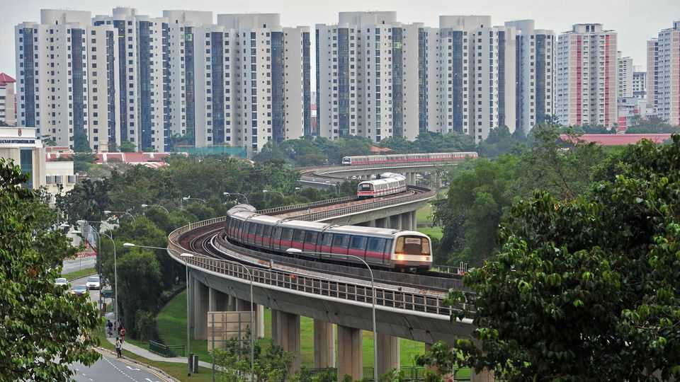

Research on grasping bureaucrats startles Singapore
It is more revealing about its academic culture than its civil service

Oct 1st 2026
YOU WOULD not expect an 85-page equation-packed economics treatise to stir public feeling. Yet in Singapore, a new working paper by four economists, Tomasz Piskorski, Amit Seru, Jian Zhang and Chun Zhao, has. It finds that between 2007 and 2019 civil servants in the squeaky-clean city-state were 60% more likely to buy private flats within a kilometre of planned but unannounced Mass Rapid Transit (MRT) metro stations, compared with a control group. Those who subsequently sold got S$80,000 ($62,000) or so more than owners of similar flats in other parts of town for every year they held on to their purchases. The paper’s publication within a week of Singapore’s generously remunerated ministers being awarded a pay rise of up to 9% added to the furore. “Tip of the iceberg?” groused one netizen.
On September 25th the government said it took the unearthed “statistical patterns” seriously and launched a probe into potential cases of “actual misconduct”. The paper has also caused a scholarly stink. Among the 20 academics named in the acknowledgments was Shengwu Li of Harvard University. Mr Li is the grandson of Lee Kuan Yew, Singapore’s late founding father. He is also a vociferous critic of his homeland’s recent governments. In a highly unusual step, two professors from the National University of Singapore (NUS), Ivan Png and Jessica Pan, asked for their names to be removed from the thank-yous, claiming they were there by mistake.
The intrigue is surprising because, if you look closely, the paper is not actually that damning. Its starting point is that a government cannot tell precisely how corrupt or honest its society is. It gets signals from things like corruption-attitude surveys, or the odd scandal. All these, though, are noisy data: both could reflect broader rot or be an outlier.
The government’s response to sleaze, by contrast, is a clean signal: it can choose to tighten enforcement or not. This in turn causes bureaucrats to recalculate their risk-reward function for mischief. Collectively, their choices influence the strength of the honesty norm. If its strength increases, and signals of corruption diminish, the government can afford to relax enforcement, and vice versa.
To see how this plays out, the paper examines a period around 2011-12, when Singapore tightened enforcement amid scandals unrelated to suspicious property purchases (a particularly tawdry one involved an official swapping confidential procurement information for sex). The researchers find that evidence of civil servants’ savvy homebuying vanishes after 2011. In other words, where norms alone failed, tougher enforcement appears to have persistently boosted honesty. “We do not see the paper as an indictment of Singapore,” says Mr Seru. “Quite the opposite.”
The palaver over the study does, however, cast a shadow over Singapore’s academic culture. In 2014 a critic of Singapore’s ruling party, Cherian George, faced a self-described “forced exit” from Nanyang Technological University, after being twice denied tenure, allegedly against the advice of his tenure committee.
The reaction of Mr Png and Ms Pan suggests they felt that any association with the paper was costly. Ms Pan did not respond to a request for comment. Mr Png says, “The news media (and laypersons) seemed to conflate being acknowledged with endorsing or concurring with the conclusions.” Nervous professors are a better problem to have than corrupt bureaucrats. But this, too, is a form of rot. ■